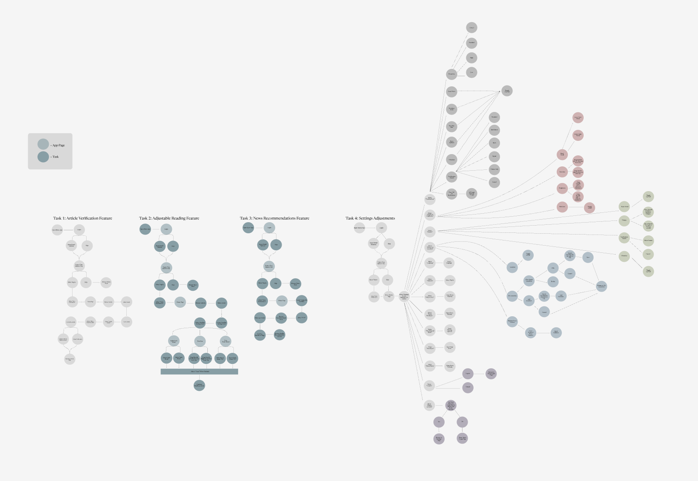
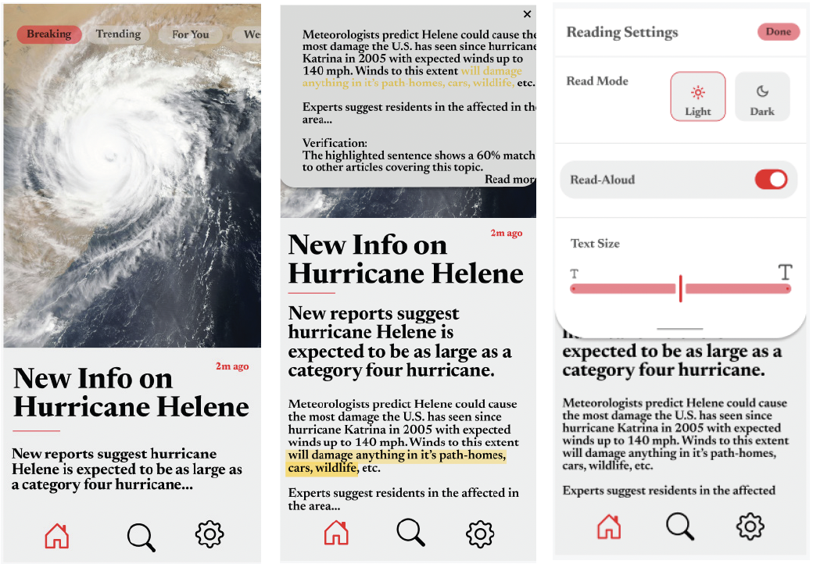

BYTES NEWS
The Problem
"Young adults need fast-paced, algorithmic news sources because of lowering attention spans."
Between 2000 and 2024, the average human attention span dropped from 12 seconds to just 8.5 seconds, influenced by various factors—most notably the rise of social media. Today, people dedicate significant portions of their day to fast-scrolling platforms like TikTok and Instagram. Simultaneously, over the past 25 years, media consumption has increasingly shifted away from news. Recognizing this trend, our team set out to reimagine how news is consumed. By integrating the fast-scrolling technology popularized by social media, we aim to make news more engaging and accessible, bringing it back into the rhythm of daily life.
Research
According to our research, 8% of people engage with news for over one hour per day and 88% of people engage with social media everyday.
We began our research by identifying our primary audience as young adults aged 18 to 30. This group is highly tech-savvy, yet the news continues to hold significance in their daily lives. Our secondary user includes older indvduals who use technology to a lesser degree.
When interviewing these indivudals, we wanted to know a series of things: How often do they spend each day enagaging with social media versus the news? What is their favorite source of news? What frustrations do they have with current news sources? What do they look for in a news source?
Our research revealed some intriguing yet conflicting insights. While most users reported spending significantly more time on social media than engaging with traditional news, 95% identified social media as their primary source for accessing news. However, when asked about their frustrations with news, a large portion expressed concerns about bias. This response conflicted with the reliance on social media — a platform often criticized as a central hub for biased content.
Based on our research, we created two personas: our primary user and our secondary user.
After conducting research, analyzing data, and creating our personas, we developed a list of design requirements and cateogrized them.
Data Requirements
AlgorithmsProvide recommended content based on interests through viewing time, likes, shares, saves, etc.
Diverse sourcesUsers are given a variety of news
sources to engage with; however, they have the option of filtering the sources they choose to engage with.
Follow, like, comment, share, and save postsUsers can engage with content through these features, which can also help curate their algorithm.
Bias/Fake news filterThe app will filter out any content deemed to be false, biased, or inappropriate.
Functional Requirements
Quick-scrolling technologyInfinite scrolling to keep users engaged with the content.
Light and Dark modeLighting adjustments for accessibility and personal preference.
Customizable font sizesFor accessibility and easy-to-read content.
Simple navigationEasy-to-read tabs, menus, sections, and search bar functions
Personalization toolsAllow users to select the news content/categories they like or dislike.
MultimediaArticles, videos, podcasts, etc., to accompany different consumption preferences.
Short-form content and summariesShort videos and article summaries for quick consumption.
NotificationsUsers have the option of turning on notifications for breaking news or content that matches their preferences.
Downloading for offlineUsers can download content to view offline.
CaptionsAvailable for videos and podcasts for users with hearing impairments.
Read-aloud teztAvailable for articles to aid users with visual impairments.
LanguagesThe app will provide the option to select language preferences to support a diverse audience.
The app will provide the option to select language preferences to support a diverse audience.Users can report issues and access the help/FAQ section if they need assistance.
Contextual Requirements
Tutorials and guidesAfter signing up, Bytes will provide a quick walk-through tutorial to explain how to use the app and its features.
Bias/Fake news filterEnsures content quality and accuracy.
Technical Requirements
App availability on both iOS and Android devicesEnsures cross-platform compatibility.
Screen compatibilityScreen layouts that fit the dimensions of different devices.
Ideation
To begin our concept ideation, we chose four tasks our low-fidelity protoype would include. Upon entering the app, the user should be able to figure out how to complete each task with ease. In order to decide the flow, we create user flow charts for each task.
- Scroll through the For You Page: Upon entering the app, the user should be able to scroll up to reach more article curate based on their interests.
- Verify an Article: The user can use an AI tool built into Bytes to verify the validity of the article - are these facts written elsewhere.
- Adjust Reading Settings: The user should be able to adjust the screen mode, increase or decrease font size, and turn on/off the read-aloud feature
- Access Settings Page: The user should be able to access the settings page to reach laguage adjustments, adjust location settings, and more
Low Fidelity Flow Charts

Low Fidelity Prototypes

User Testing
After creating prototypes, we brought in some users to complete testing. We asked each user to preform each task and provide feedback on their experience. From their feedback, we regrouped as a team, made adjustments to the protoype and produced our high fidelity protoype.
According to our users' feedback, we needed to make a few minor adjustments. To begin we found some of our elements lacked functionality. For example, we included a search bar in the bottom navigation but no search page. We decided to combine Task 1 and 2 together, as it made more sense to have them in the menu so users would have less steps to go through. This allows the user to smoothly navigate the reading settings menu. For task 3, our user suggested that we add labels to show what category the article falls under. After receiving this feedback, we implemented categorized labels for all of the articles on our Hi-Fidelity Prototype so users will know what the article pertains to. We implemented a “read more button” that allows users to read the full article on the home or for you page. The last thing we implemented onto task 3 was a horizontal scroller that would show users they can scroll to see other articles that are recommended for them to read.
High Fidelity Prototypes
Conclusion
Acknowledgements
We acknowledge that our application is still in the prototype phase and still requires many additional rounds of testing, as well as, making updates and changes to the prototypes based on the responses to the testing before our application is ready to start the development process. We would also like to thank Dave Wang for his support and contributions of ideals while creating design ideas. An additional thank you to Figma, Canva and all of our competitors for inspiring us to come up with our own app features that made Bytes what it is today.
Future Works
Enhancing accessibility features to accommodate individuals with colorblindness is a key focus for our project. Additionally, we plan to integrate interactive elements such as liking, commenting, and sharing to foster user engagement and community interaction. This application has provided our team with invaluable experience in professional user research and rigorous usability testing, sharpening our design and development skills. If fully developed, this application has the potential to significantly increase news consumption and engagement across all generations, bridging gaps in accessibility and modernizing how news is experienced.
More Work by Mallory
UX/UI Projects
A collection of research and design projects developed according to UX principles
See MoreConnect With Me
Email: mbbeemus@gmail.com
Phone: 757 651 6795
LinkedIn: mbbeemus
GitHub: mbbeemus
Instagram: @mbbeemus
Mallory Beemus
James Madison Univeristy
Harrisonburg, Virginia
School of Media Art and Design
Interaction Design
Email: mbbeemus@gmail.com
Phone: (757)651-6795